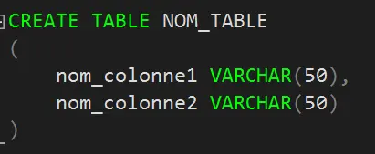
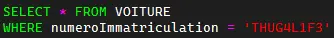
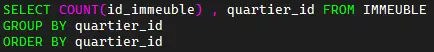
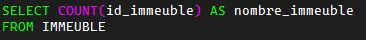
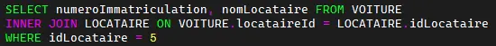

Transact-SQl
SQL
SQL (sigle de Structured Query Language, en français langage de requête structurée) est un langage informatique normalisé servant à exploiter des bases de données relationnelles. La partie langage de manipulation des données de SQL permet de rechercher, d'ajouter, de modifier ou de supprimer des données dans les bases de données relationnelles.
CRUD
CRUD (create, read, update, delete) (créer, lire, mettre à jour, supprimer) est un acronyme pour les façons dont on peut fonctionner sur des données stockées. C'est un moyen mnémotechnique pour les quatre fonctions de base du stockage persistant.
REQUETE
Une requete est une instruction qui permet de gerer les données de la base de données.
STRUCTURE DE REQUETE
Une requete se structure dans un ordre précis:
- COMMANDE
- JOINTURE
- CONDITION
- GROUPEMENT
- TRI
CREATE
CREATE est la commande qui permet de creer des elements de structure de base de données comme des tables ou des bases de données.
SELECT
SELECT (READ) est la commande qui permet d'afficher des données dans une base de données.
UPDATE
UPDATE est la commande qui permet de modifier des données dans une base de données.
DELETE
DELETE est la commande qui permet de supprimer des données dans une base de données.
FONCTION D'AGREGATION
Une fonction d'agrégation est une operation dans une requete permettant de calculer un resultat sur les données d'une colonne en fonction de parametres definis. Il en existe plusieurs, comme SUM() (calcul de somme), AVG() (calcul de moyennes), COUNT() (calcule le nombre de lignes).
CONDITION (WHERE)
La condition est utilisée pour filtrer les resultats de requete. Dans cet exemple elle permet de selectionner des informations relatives a un vehicule en fonction de sa plaque d'immatriculation.
GROUP BY()
Pour repertorier les resultats d'une colonne en fonction d'une autre, il faut utiliser GROUP BY(). Par exemple, ici, on souhaite connaitre le nombre d'immeubles enregistrés par quartier:
ORDER BY()
ORDER BY() permet d'assurer un tri en fonction des valeurs d'une colonne.
ALIAS
un alias est un nom alternatif utilisé pour un élément de la base de données.
JOINTURE
Une jointure sert à relier deux tables entre elles. Pour réaliser une jointure, on utilise une valeur de donnée commune aux deux tables.
